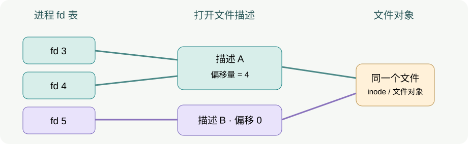

计算机系统 · 操作系统与文件 / 19
同一个文件，为什么两个描述符会共享位置？
一个 read() 读到的不是“一个完整消息”，dup2() 也没有复制文件内容。沿着“描述符 → 打开文件描述 → 文件”这条路径，我们把 Unix I/O、重定向、缓冲和短读写串成一个可检查的模型。
阅读前提：了解进程和基本 C 语法；本章示例以 POSIX / Linux 为语境，不把所有设备等同于普通磁盘文件。
19.1 描述符不是文件：先看三层映射
进程看见的文件描述符（fd）只是一个小整数。内核通过进程的描述符表找到一个打开文件描述（open file description），其中保存文件偏移量和文件状态标志，再指向文件对象。open() 通常创建新的打开文件描述；dup() / dup2() 则让两个 fd 指向同一个打开文件描述。

这解释了 dup(3) 后两个 fd 为什么共用当前偏移量；但如果对同一路径分别执行两次 open()，它们通常拥有独立偏移量。fork() 后继承的 fd 也可以指向同一个打开文件描述。不要把“描述符是整数”误认为所有整数都能使用，关闭后继续操作可能得到 EBADF。
动一动：第二个描述符从哪里开始读？
抽象模型假设常规文件、读取成功且从位置 0 起步；不是对终端、管道或 O_APPEND 的通用描述。
19.2 open → read/write → close：成功也可能只处理一部分
open(path, flags, mode) 的 mode 参数只在创建文件等需要它的情形下提供；它并不是永远都必传的第三个参数。打开成功返回 fd，失败返回 −1 并设置 errno。read(fd, buf, n) 返回实际读到的字节数：正数可能小于 n；0 通常表示已到常规文件末尾（流式输入则表示对端有序关闭等情形）；−1 表示错误。write() 也可能短写。
下面是一个可独立编译的 POSIX 文件复制示例。内层循环负责写完已读数据；只在 errno == EINTR 时重试。不能在返回 −1 时直接移动指针，也不应假定一次 write 会把所有字节写完。
#define _POSIX_C_SOURCE 200809L
#include <errno.h>
#include <fcntl.h>
#include <stdio.h>
#include <unistd.h>
int main(int argc, char **argv) {
if (argc != 3) { fputs("usage: copy SRC DST\n", stderr); return 2; }
int in = open(argv[1], O_RDONLY);
if (in < 0) { perror("open source"); return 1; }
int out = open(argv[2], O_WRONLY | O_CREAT | O_TRUNC, 0644);
if (out < 0) { perror("open target"); close(in); return 1; }
int ok = 0;
char buf[4096];
for (;;) {
ssize_t n = read(in, buf, sizeof buf);
if (n < 0) {
if (errno == EINTR) continue;
perror("read"); break;
}
if (n == 0) { ok = 1; break; }
for (ssize_t off = 0; off < n;) {
ssize_t w = write(out, buf + off, (size_t)(n - off));
if (w < 0 && errno == EINTR) continue;
if (w == 0) { fputs("write returned zero\\n", stderr); goto done; }
if (w < 0) { perror("write"); goto done; }
off += w;
}
}
done:
if (close(out) < 0) { perror("close target"); ok = 0; }
if (close(in) < 0) { perror("close source"); ok = 0; }
return ok ? 0 : 1;
}尝试 cc -std=c11 -Wall -Wextra -pedantic copy.c -o copy && ./copy input.bin output.bin，再用 cmp input.bin output.bin 比对。边界：这是教学用的普通文件复制程序，未实现权限保留、稀疏文件处理、原子替换，也不支持源和目标是同一个文件（目标会被截断）。
19.3 dup2() 为什么能实现重定向？
Shell 执行 command > out.txt 时，通常在子进程中打开文件，然后使用 dup2(fd, STDOUT_FILENO)。内核让标准输出描述符 1 指向新打开的文件描述，于是之后写往 stdout 的字节进入该文件。重新指向描述符，不等于复制文件的数据。
/* fork 后的子进程片段；需要检查每一个返回值 */
int fd = open("out.txt", O_WRONLY | O_CREAT | O_TRUNC, 0644);
if (fd < 0) _exit(127);
if (dup2(fd, STDOUT_FILENO) < 0) _exit(127);
close(fd); /* stdout 仍然有效 */
execlp("ls", "ls", (char *)NULL);
_exit(127); /* 只有 exec 失败才返回 */dup2 的替换在描述符层面具有原子语义；它不会把原 stdout 的内容搬到新文件。使用 fork 与 exec 时，还要注意错误路径、FD_CLOEXEC 和父子进程各自应当关闭哪些 fd。
19.4 两层缓冲：内核与 stdio 别混为一谈
read/write 是描述符接口；fread/fprintf 等 stdio 函数通过 FILE * 在用户态维护缓冲。全缓冲、行缓冲、无缓冲是流的策略，不等于每一次 printf 都触发一次系统调用。标准输出连终端时常采用行缓冲，重定向到普通文件时常采用全缓冲，实际行为受实现和配置影响。
若 printf("hello") 尚留在用户态缓冲，随后 fork()，父子进程可能各持有一份尚未刷新的缓冲，并在正常退出时各自刷新。解决思路是按要求在 fork 前 fflush()，或在只需退出子进程的错误分支使用 _exit()。不要无意识混用同一个打开文件描述上的 stdio 与原始 fd 操作。
19.5 RIO 的本质：让上层明确“读够”与“读到行尾”
CS:APP 的 RIO 接口中，rio_readn / rio_writen 循环处理短计数，而 rio_readlineb / rio_readnb 通过内部缓冲减少读取次数。它们提供的是应用层可复用的循环逻辑，不是“网络每次都返回指定长度”的保证。
尤其注意：rio_readn 遇到 EOF 可以返回少于 n 的字节；读取一条文本协议消息，必须先规定长度或结束条件。对套接字应用，应区分连接关闭、部分消息、EAGAIN（非阻塞模式）以及协议规定的最大长度；盲目等待 n 个字节可能一直阻塞。
/* 针对阻塞 fd 的简化 readn；不处理非阻塞 EAGAIN */
ssize_t readn(int fd, void *dest, size_t count) {
size_t left = count;
char *p = dest;
while (left) {
ssize_t n = read(fd, p, left);
if (n < 0 && errno == EINTR) continue;
if (n < 0) return -1;
if (n == 0) break; /* EOF：可短于 count */
left -= (size_t)n;
p += n;
}
return (ssize_t)(count - left); /* 假定 count <= SSIZE_MAX */
}这里是带约束的核心算法片段，不是完整 RIO 库：调用者需包含头文件、限制请求长度并根据协议处理返回值。下一章使用 socket 时，这个区分会直接决定 HTTP 请求是否会被截断。
19.6 自测：读了几字节，两个位置分别在哪？
先 fd1 = open("a", O_RDONLY)，随后 fd2 = dup(fd1)；read(fd1, b, 3) 成功返回 3。接下来对 fd2 读取从哪个位置开始？如果把 dup 改成第二次 open 又怎样？
查看推导
dup 后两个描述符指向同一打开文件描述，所以 fd2 从偏移量 3 继续；独立 open 通常从偏移量 0 开始。这里假设普通可定位文件且没有其他进程或线程改变偏移量。
资料与适用范围
更多接口细节见 open(2)、read(2)、write(2) 和 dup(2)；本章以 CS:APP 3e 的系统级 I/O 教学范围为起点。系统调用、文件系统和标准 I/O 实现的细节应以运行平台为准。
技术深描 · 19 / TRACE
read(7) 为什么只返回 3？短读、EOF 和 EINTR 如何分开处理？
当调用 read(fd, buf, 7)，7 只是上限，并不是内核保证填满的长度。构造一个确定性输入：管道写端先写 ABC（3 字节），然后关闭；接收端第一次要求最多 7 字节，得到正数 3 和字符 ABC；第二次读返回 0，表示写端全都关闭且缓冲数据耗尽。这个实验不涉及网络、不依赖 TCP 报文分段，也不依赖调度先后。
| 返回情况 | 含义 | 应用应做什么 |
|---|---|---|
n > 0 | 本次交付了 n 字节，可能小于 count | 累计偏移、继续解析或按业务结束 |
n == 0 | 普通流中表示已读到 EOF；零长度请求另当别论 | 根据协议判断是否提前截断，勿死循环 |
n == -1 && errno == EINTR | 在交付数据前被信号打断 | 按调用契约和取消策略重试 |
n == -1 && (EAGAIN/EWOULDBLOCK) | 非阻塞操作当前不能继续 | 等待下一次就绪，不忙循环 |
写端也必须检查 write 的返回值：一次写入可能只接受一部分字节。要发送完整缓冲区，通常应保存尚未发送部分的起始偏移；注意处理 EINTR、非阻塞 EAGAIN 和错误，并避免在未约定的情况下重放已成功写入的前缀。
cc -std=c11 -Wall -Wextra -Werror -pedantic -pthread examples/deep-ch19-23.c -o /tmp/deep-io
/tmp/deep-io short-read
python3 examples/deep-ch19-23-models.py 19这份 C 程序使用匿名管道验证短读 + EOF，不是制造未定义的网络时序。规则依据 read(2)、write(2)；下一章再把流上的字节转为有明确定界的应用记录。
技术深描 · 19 / 输出游标
非阻塞写：为什么不能重发已写前缀，也不能把 EAGAIN 当成功？
阻塞写通常能一次写完大缓冲的一部分，非阻塞写则可能一个字节也没写就返回。若把非阻塞 write 的返回值一律当作“发送成功”，要么丢掉未写部分，要么在下次就绪时从头重发，导致对端看到重复前缀。正确做法是维护一个输出游标，只重试尚未发送的后缀。
| 结果 | 含义 | 游标 |
|---|---|---|
n > 0 | 已接受 n 字节 | 前进 n |
EAGAIN/EWOULDBLOCK | 当前不可写，未曾传输 | 不变，等待下次就绪 |
EINTR | 交付数据前被信号打断 | 不变，按契约重试 |
取缓冲区 HELLO：write 返回 2，游标到 2；接着 EAGAIN，游标仍为 2；再返回 1，游标到 3；遇 EINTR 不动；最后返回 2，游标到 5 完成。全程期待的是“已接受前缀”HEL 等，而不是整段重来。
python3 examples/deep-ch19-23-b.py 19b模型用一个脚本化的返回值序列驱动状态机，断言游标单调、不重发、不丢弃，且 EAGAIN 不产生假成功。它不模拟真实内核缓冲、写合成或 TCP 的字节流边界；具体返回语义以 write(2) 为准。correct 的发送状态机只保存剩余输入、输出游标与关闭状态，避免忙等与重复发送。